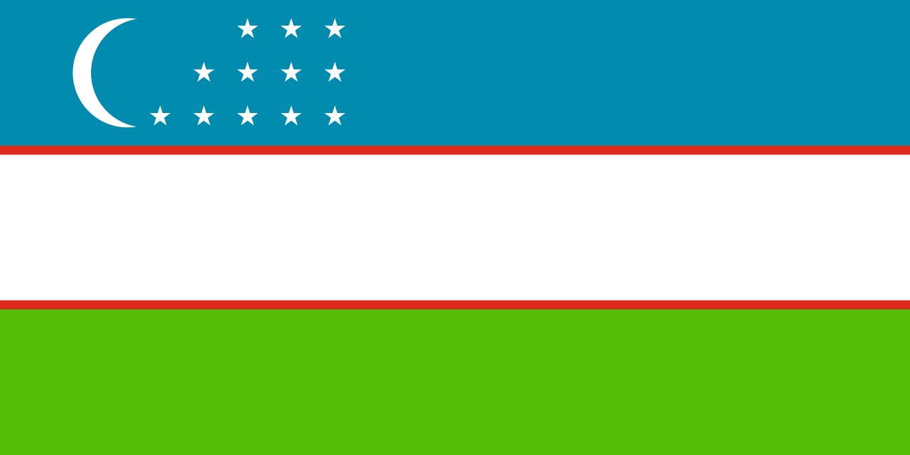

Uzbekistan's first Olympics as an independent nation: Lillehammer 1994 and Atlanta 1996
After independence, Uzbekistan first competed under its own flag at the 1994 Lillehammer Winter Games — where Lina Cheryazova won the country's first-ever gold medal. The history from the founding of the National Olympic Committee to Atlanta 1996, based on verified facts.

After gaining independence, Uzbekistan began to present itself on the world stage together with its state symbols — flag, emblem and anthem. One of the most visible of those stages was the Olympic Games. This article sets out, with verified facts, Uzbekistan's first participation in the Olympics as an independent nation — the 1994 Lillehammer Winter Games and the 1996 Atlanta Summer Games (Source: Olympedia; Olympics.com/IOC).
The founding of the National Olympic Committee
The National Olympic Committee of Uzbekistan was established on 21 January 1992. The International Olympic Committee (IOC) formally recognized it in September 1993, at the IOC's 101st Session in Monte Carlo. The national flag had been adopted earlier — on 18 November 1991 — and it was this flag that was raised at the Games that followed (Source: Olympedia — Uzbekistan; Wikipedia — National Olympic Committee of the Republic of Uzbekistan; ANOC).
1992 Barcelona: the 'Unified Team'
At the 1992 Barcelona Summer Olympics, Uzbekistan's athletes did not yet compete under their own flag, but as part of the 'Unified Team' (IOC code EUN) of former Soviet republics — a team made up of 12 of the former Union's republics. For example, Uzbekistan-trained Andrey Abduvaliyev won gold in the hammer throw for the Unified Team in Barcelona (Source: Wikipedia — Unified Team at the 1992 Summer Olympics).

1994 Lillehammer: the first flag and the first gold
The Lillehammer (Norway) Winter Olympics were Uzbekistan's first participation as an independent nation, under its own flag. The team had 7 athletes (3 men, 4 women) in two sports. On 24 February 1994, Lina Cheryazova won GOLD in the women's freestyle skiing aerials with a score of 166.84. It was independent Uzbekistan's first-ever Olympic gold, and to this day it remains the country's only Winter Olympic medal. Because women's aerials was introduced as a medal event in 1994, Cheryazova is also the first-ever Olympic champion in the event. She was born on 1 November 1968 in Tashkent and died on 23 March 2019 (Source: Wikipedia — Uzbekistan at the 1994 Winter Olympics; Lina Cheryazova; FIS; Olympics.com).
1996 Atlanta: the first Summer Games
Atlanta (USA) was Uzbekistan's first Summer Olympics as an independent nation. The team of 71 athletes (63 men, 8 women) competed in 12 sports and won 2 medals: 1 silver and 1 bronze (no gold), ranking 58th overall. The silver was won by Armen Bagdasarov in judo (middleweight, 86 kg) — independent Uzbekistan's first-ever Summer Olympic medal. The bronze went to boxer Karim Tulaganov. Uzbekistan's first Summer Olympic gold came later, at the 2000 Sydney Games, won by boxer Muhammadqodir Abdullayev (Source: Wikipedia — Uzbekistan at the 1996 Summer Olympics; Uzbekistan at the Summer Olympics; Armen Bagdasarov).
Why this matters
Uzbekistan's independent Olympic debut was one of the symbolic steps by which a new state became recognized on the world stage, with its own flag and anthem. Lina Cheryazova's 1994 gold remains the first peak of the country's sporting history. This article presents only verified dates, names and figures; it offers no judgments or interpretation.

Sources
- Olympedia — Uzbekistan
- Wikipedia — Uzbekistan at the 1994 Winter Olympics
- Wikipedia — Lina Cheryazova
- Wikipedia — Uzbekistan at the 1996 Summer Olympics
- Wikipedia — Armen Bagdasarov
- Wikipedia — National Olympic Committee of the Republic of Uzbekistan
- Wikipedia — Unified Team at the 1992 Summer Olympics
- Olympics.com — Uzbekistan